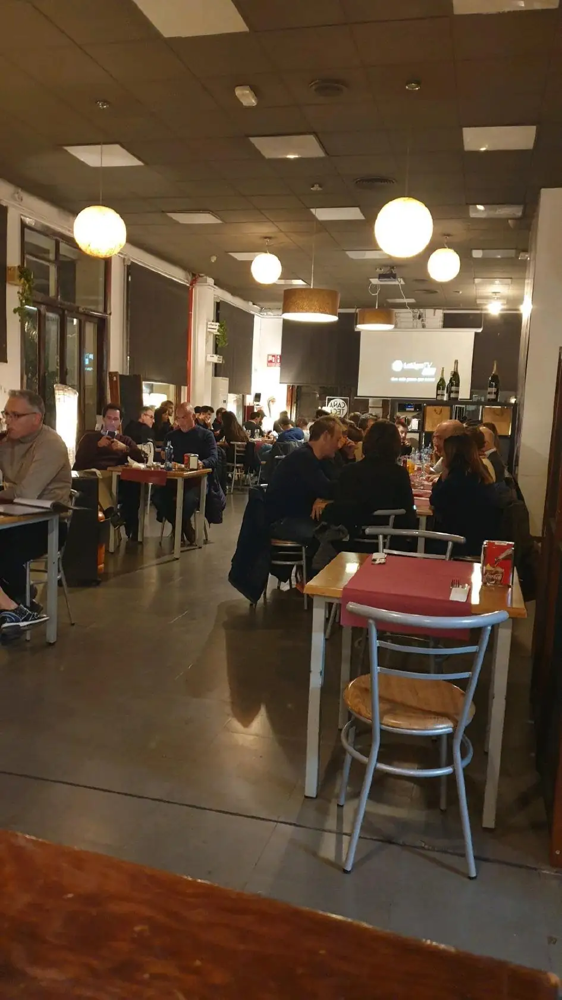
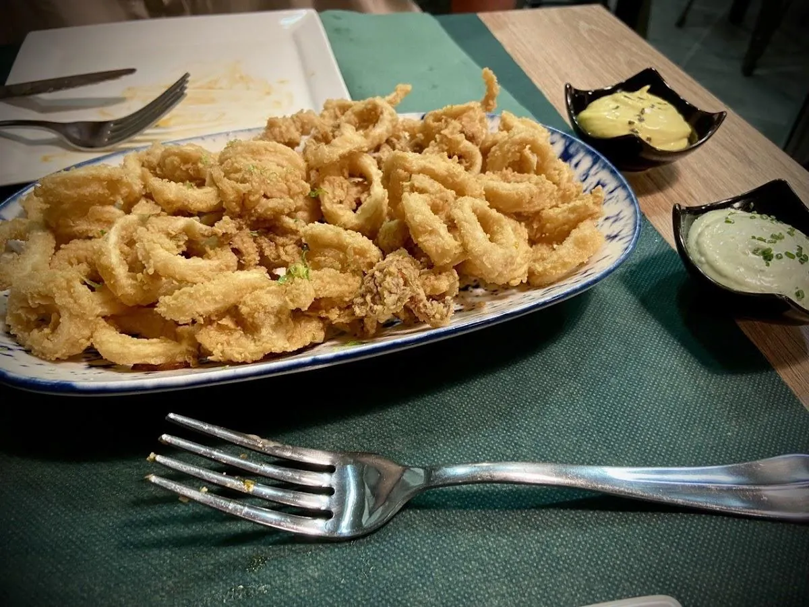
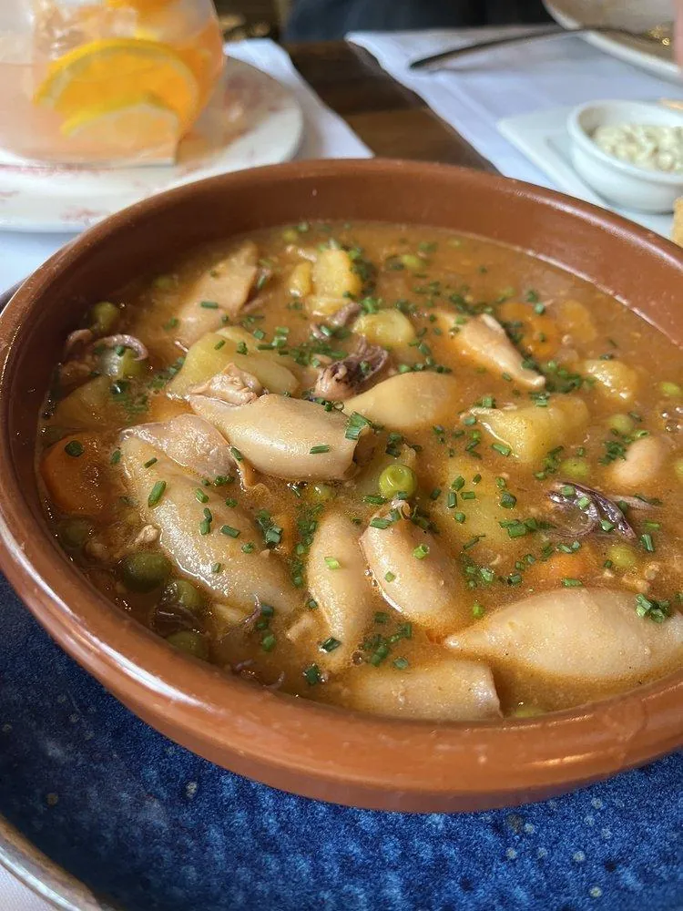

Vermut de barril
Vermut de tota la vida, servit a la manera de sempre: copa freda, rodanxa de taronja, olives i banderilla al costat. El ritual del vermut a Sant Antoni passa per aquí.
BanderillesMontaditos
Cent anys al mateix lloc. La mateixa marquesina de fusta, les mateixes taules, el mateix vermut de barril que va beure el vostre avi. A La Principal, Sant Antoni no ha canviat.

Interior La Principal · Sant AntoniNo som una tendència. Som la continuïtat d'un lloc on generacions de famílies de Sant Antoni han anat a esmorzar, a fer el vermut, a celebrar i a trobar-se. La nostra marquesina de fusta porta cent anys aguantant el pes del barri.
El bar La Principal obre les portes al Carrer de Sepúlveda 186, al cor del barri de Sant Antoni. La marquesina de fusta — que encara presideix la façana — és la primera cosa que els veïns veuen cada matí en sortir de casa.
La gent del barri adopta el ritual del vermut del diumenge a La Principal. Les banderetes, les olives i els montaditos en safata metàl·lica es converteixen en el senyal d'una tarda ben aprofitada. Una tradició que no hem tocat mai.
Neix la saga de bocates que ha donat fama al local: els "40 Principals", els "Tortillakens" i la "Fernanda". Sandvitxos enormes, elaborats amb ingredients frescos, que la gent travessa el barri per menjar. La carta no ha canviat des d'aleshores.
La terrassa amb toldo i la pissarra del menú al carrer es converteixen en el punt de trobada de veïns, joves i famílies. La Principal és el tercer lloc: ni casa ni feina. El lloc on es parla, es riu i es posa al dia amb tothom.
El 2025 hem complert cent anys. La marquesina de fusta segueix dreta. El vermut segueix sent el mateix. I la gent — joves, grans, veïns de tota la vida i nouvinguts — continua triant La Principal com el seu bar de barri.
Cent anys donen molt. No som originals per moda — som originals perquè portem tota la vida fent el mateix, i el barri ens ho reconeix.
Vermut de tota la vida, servit a la manera de sempre: copa freda, rodanxa de taronja, olives i banderilla al costat. El ritual del vermut a Sant Antoni passa per aquí.
Els "40 Principals", els "Tortillakens", "La Fernanda". Bocates enormes amb farciment generós que han creat devoció al barri des dels anys vuitanta. El boca-orella val per milions de seguidors.
Esmorzem des de primera hora. Tortilla, tapes, brioixeria casolana. I el menú del migdia a preu de barri, el que fa que molts oficinistes de l'Eixample baixin fins a Sepúlveda cada dia.
La marquesina de fusta és el símbol del bar. La terrassa al carrer és el saló del barri. Gent gran, famílies i joves convivint a les mateixes taules — el miracle de la bona hostaleria de proximitat.
El bar i els seus plats, tal com els veuen els veïns cada dia.


[FOTO: Terrassa i marquesina de fusta]
Carta de tota la vida. No la fem créixer per semblar moderns. La fem bona perquè ens hi dediquem. Els preus de barri, sense sorpreses.
Cent anys al mateix lloc. Sepúlveda 186, a dos passos del Mercat de Sant Antoni i del Paral·lel.
Sí, podeu trucar al 93 325 30 89 per reservar taula, especialment els caps de setmana i en hores de vermut (12:00–14:30) quan la terrassa s'omple. Per a grups de més de 8 persones, us recomanem avisar amb un dia d'antelació per assegurar l'espai. La terrassa és el lloc més sol·licitat, sobretot els diumenges de vermut al sol.
Els tres bocates que la gent travessa el barri per menjar són: els "40 Principales" (pernil, formatge i tomàquet en pa cruixent), els "Tortillakens" (sandvitx de tortilla d'ou amb patata i pebrot) i "La Fernanda" (ceba caramel·litzada amb formatge i embotit de la casa). La recepta dels tres no ha canviat des dels anys vuitanta. Si és la primera vegada, comenceu pels 40 Principales.
El vermut "clàssic" de La Principal és el de diumenge al migdia, entre les dotze i les dues. La terrassa s'omple de veïns del barri, hi ha música de fons, i es serveix el vermut de barril amb banderilles, olives i montaditos de la casa. Un ritual de Sant Antoni que la gent del barri fa des de fa dècades. Entre setmana, el dissabte al migdia també és molt animat.
Sí. De dilluns a divendres s'ofereix un menú del migdia a preu de barri que inclou primer plat, segon plat, postres i beguda. La cuina és de mercat — el que hi ha de bo aquell dia. Molta gent d'oficines de l'Eixample baixa fins a Sepúlveda expressament. Recomanem arribar aviat (a les 13:00–13:30) perquè les taules s'omplen ràpid.
Sí, la terrassa amb la marquesina de fusta — el senyal d'identitat del bar — és oberta pràcticament tot l'any. La marquesina protegeix de la pluja i el sol, de manera que fins i tot els dies lleugerament ruixats la terrassa es pot gaudir. A l'hivern s'afegeix calefacció per a les taules de l'exterior. La terrassa és la cara de La Principal i el cor del barri.
Això era una demo
Aquesta web era una mostra del que podríem fer per a La Principal. Si t'ha agradat i en vols una per al teu negoci, escriu-nos — en Pedro et respon personalment i la web final l'adaptem al 100% al teu gust.
Pedro Núñez · Impacto Digital